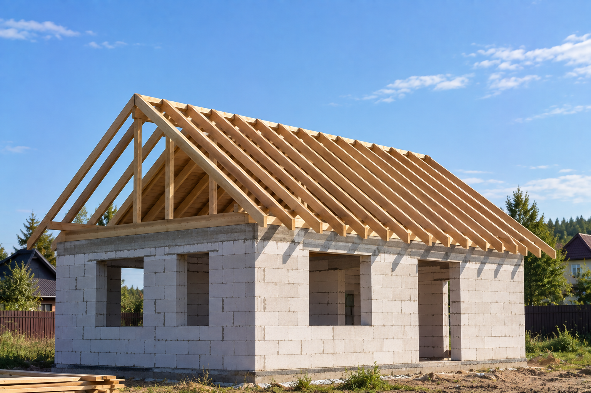

Каркас скатов
Ставлю стропила и связанные с ними элементы, на которые потом ляжет основание кровли. Состав узла зависит от формы этой крыши.
Собираю стропильную систему и меняю отдельные элементы, которые уже не держат крышу. Работаю лично в Архангельске, Северодвинске и Новодвинске. Сечения и шаг на странице не назначаю: их смотрю по конкретной крыше. Материалы в цену работ не входят.
от 1 050 ₽/м²
Позвонить: +7 921 484-08-74
1 050 ₽/м² — монтаж стропильной системы. Мауэрлат и обработка дерева в эту строку не входят.
Ставлю стропила и связанные с ними элементы, на которые потом ляжет основание кровли. Состав узла зависит от формы этой крыши.
Опорный брус по стене. В прайсе это отдельная работа — 910 ₽/м.п. Делаю, если его нет или он уже не держит стропила.
Гнилую, треснувшую или просевшую деталь меняю отдельно. Целую систему не разбираю, если остальной каркас рабочий.
Огне-био защита — 230 ₽/м², если дерево нужно обработать. В цену монтажа стропил она не входит.
Итог зависит от площади и формы крыши, от того, что можно оставить, и от того, нужны ли мауэрлат и обработка. Материалы считаются отдельно.
После каркаса идут другие работы: ветровлагозащита, обрешётка и покрытие. Полный список — в прайсе.
Калькулятор на сайте считает укладку покрытия, а не стропила. По этой работе цену называю после фото или осмотра.
По снимку чердака или ската скажу, оставляю существующие стропила или меняю элементы. Сечения по фото не назначаю. Это не итоговая смета.
Новое покрытие не вытягивает просевший каркас. Пока не видел конструкцию, не говорю, что её можно оставить.
Смотрю опоры, стропила и узлы. Нагрузки, сечения и шаг зависят от этого дома — общих цифр на странице нет.
На стропила потом ложатся мембрана, обрешётка и покрытие: металлочерепица, профнастил, мягкая кровля или фальц. Кривой каркас покрытие не спрячет.
Локальная гниль может остаться ремонтом крыши. Если каркас не держит скат целиком, это уже часть замены кровли.
Вынос стропил задаёт карниз. Подшивку этого узла считаю отдельно — на странице свесов.
Реальные кровельные работы, выполненные мной.
Позвоните или напишите в MAX. Нужен снимок чердака, стропил или общего вида крыши.
По фото вижу объём. Если каркас не разобрать по снимку, смотрю его на объекте.
До начала работ согласую, что меняем: стропила, мауэрлат, обработку. Лишние строки в смету не добавляю.
Собираю каркас и сдаю его до следующих слоёв кровли. На выполненные работы — гарантия 1 год.
По прайсу — 1 050 ₽/м². Мауэрлат — 910 ₽/м.п., огне-био защита — 230 ₽/м². Это другие строки. Материалы считаются отдельно.
Когда элемент сгнил, треснул или скат уже просел. Сухой рабочий каркас оставляю. Объём называю после осмотра, а не по общему правилу.
Нет. Нагрузки и сечения зависят от конкретной крыши. На странице эти цифры не публикую и «типовой» шаг не даю.
Только если каркас нужно менять. Замена кровли — это покрытие и подготовка основания. Стропила добавляю, когда без них крышу не собрать.
Да. Работаю в Архангельске, Северодвинске и Новодвинске.
По снимку предварительно отделю замену элементов от сборки новой системы. Стоимость согласую до работ.